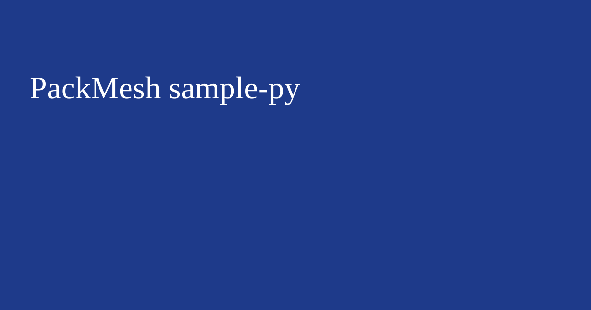

Endpoints: create scenario, run scenario, status, results.
Business value: use this sample to reduce implementation time, de-risk integration rollout, and produce KPI outputs that support cost and service-level decisions.